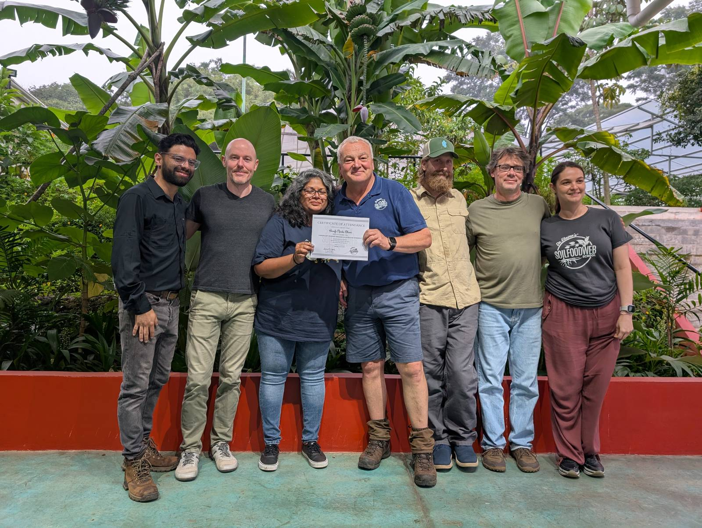
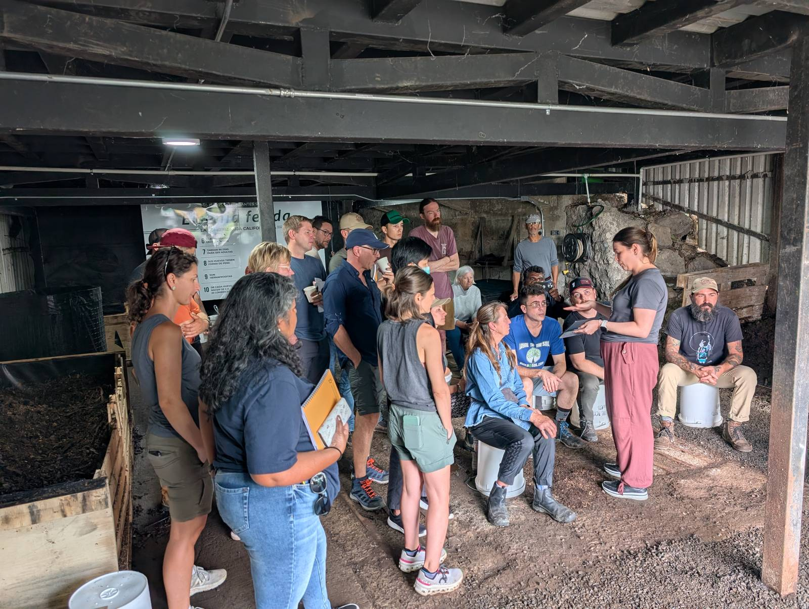

Accelerator Workshop October 2025
Área Metropolitana de San José, Costa Rica · 13–24 October 2025
This workshop has ended.

Graduate with certificate and mentors
Overview
The October 2025 Accelerator Workshop took place at Armonía Agricultura Orgánica in Heredia, part of the San José metro area of Costa Rica (October 2025 newsletter; workshop page). It was the school's fourth in-person workshop of 2025, after Cyprus in January, Costa Rica in March and Norfolk in June, and a return to Armonía (October 2025 newsletter). Armonía is a campus built around health and learning: it includes primary and secondary schools and an organic farm that serves as an educational centerpiece and feeds visitors at an on-site restaurant (October 2025 newsletter).

The school ran it as a CTP Fast Track Workshop, its intensive format for students in the Consultant Training Program. Photos show students sitting on white buckets and standing in a circle in the covered compost shed, listening to an instructor in a leather hat (photo).

On the last day, graduates held up their certificates in front of the farm's tropical plants (photo).

Why it matters
Costa Rica shows what a country can do when it decides to restore land. Forest cover fell to 21 to 25 percent of the country in the 1980s, and after policies such as payments to landowners who protect forests, it had climbed back to 53 percent by 2016 (Inter Press Service). Farmland has not had the same turnaround: FAO data put Costa Rica first in the world for pesticide use per hectare over 2000 to 2020, at about 23 kg per hectare (Semanario Universidad). This workshop taught consultants to replace chemical inputs with soil biology, on a campus where schoolchildren already learn on an organic farm (October 2025 newsletter).
References
- Arguedas Ortiz, D. (2016, July 26). Forests and crops make friendly neighbors in Costa Rica. Inter Press Service. https://www.ipsnews.net/?p=146239
- Semanario Universidad. (2023, July 5). Costa Rica es el país que utiliza más plaguicidas en todo el mundo, según estadísticas de la FAO. https://semanariouniversidad.com/pais/costa-rica-es-el-pais-que-utiliza-mas-plaguicidas-en-todo-el-mundo-segun-estadisticas-de-la-fao/
- Soil Food Web Foundation. (n.d.). Accelerator Workshop October 2025 [Workshop page]. https://new.soilfoodweb.com/workshop/accelerator-workshop-october-2025/
- Soil Food Web School. (2025, October 9). October 2025 – Newsletter. https://soilfoodweb.com/october-2025-newsletter/